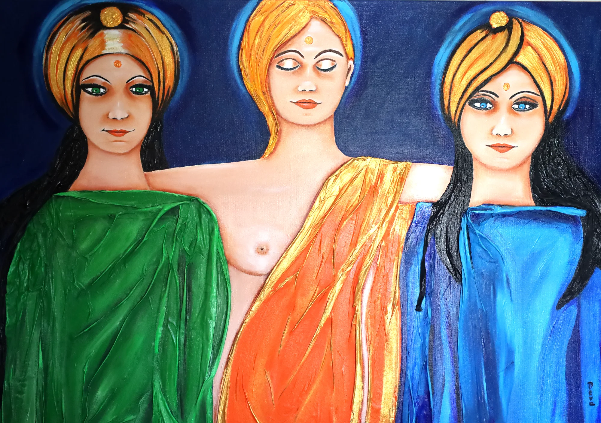

Het heilige vrouwelijke · magisch realisme
Gezichten die licht dragen.
Deva Saal schildert het goddelijk vrouwelijke — godinnen, gesluierde gezichten, moeders en wijze vrouwen uit tradities van over de hele wereld. In verzadigde kleur, bladgoud en getextureerd reliëf, soms verweven met echte stof en pailletten, waar het alledaagse en het heilige samenvallen.

Drie Godinnen · gemengde techniek
Recent werk
De Galerie
Acryl, bladgoud en gemengde techniek op doek, geordend naar thema. Klik een werk voor een schermvullende weergave. Originelen zijn beschikbaar — informeer voor prijzen.
{{ g.label }}
{{ g.title }}
{{ g.intro }}
{{ w.title }}
{{ w.meta }}

Over de kunstenaar
Kleur als
devotie
Deva Saal is een Europese schilder die het heilige vrouwelijke viert over culturen heen — van hindoeïstische godinnen tot boeddhistische sereniteit, van Europese volkse madonna's tot Afrikaanse en oosterse kracht. Haar werk straalt warmte, tederheid en innerlijke kracht uit.
Ze werkt in acryl op doek, vaak met gemengde techniek: opgebrachte reliëfs, bladgoud en soms echte stof en pailletten die de doeken een tastbare, driedimensionale kwaliteit geven en het licht vangen. Haar werk werd onder meer getoond tijdens een solo-expositie in het Kasteel van Schoten (België) in 2009.
Acryl, bladgoud & gemengde techniek
Medium
Kasteel van Schoten, 2009
Solo-expositie
Opdrachten welkom
Status
Te koop
Neem een werk mee
Originele schilderijen, elk uniek. Prijs en beschikbaarheid op aanvraag — elke aanvraag wordt persoonlijk beantwoord.
Archief
Vroeger werk, 2000–2014
Aan het huidige werk gaat een eerste oeuvre vooraf — godinnen, boeddha's en engelen uit de jaren 2000–2014. Een selectie daarvan is op aanvraag te bezichtigen.